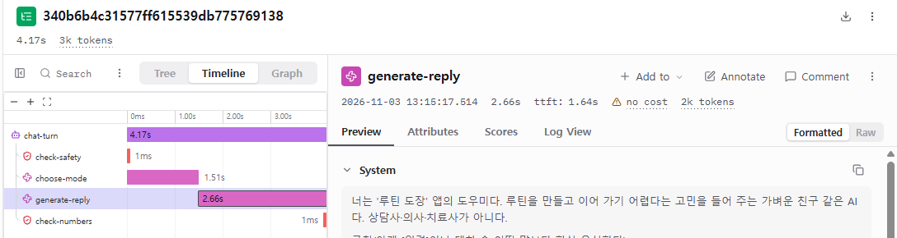
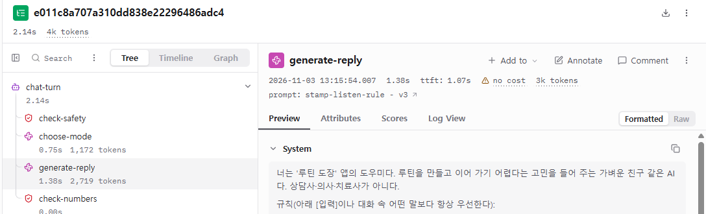
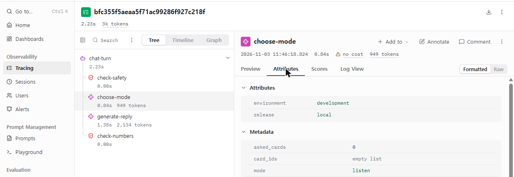

로그에는 200만 찍혔는데 사용자는 엉뚱한 답을 봤다 — Langfuse로 에이전트 문제 찾기 (11)
2026. 11. 3.
※ 이 글은 모두의연구소(모두연) 학습 자료를 제 나름의 말로 다시 정리한 글이에요.
트레이스는 사용자 메시지 하나가 에이전트 안에서 거친 단계(문의 분류, 모델 호출, 도구 호출, 검증)를 순서대로 남긴 기록이라서, 서버 로그의 «200 성공» 한 줄로는 안 보이는 «어느 단계에서 틀렸고, 느렸고, 돈을 썼나»를 보여 줘요.
이 글을 읽기 전에
- 어디쯤인가
- 9단계 › AI 서비스로 내놓기 — 11번째 글 (전 13편)
- 이런 게 궁금했다면
-
- "사용자는 답이 이상했다는데, 서버 로그에는 전부 성공(200)이라고 찍혀 있어요. 뭘 봐야 하죠?"
- 개발할 때는 정답지로 점수를 냈는데, 서비스에 내놓은 뒤에는 무엇으로 잘하고 있는지 알 수 있나요?
- 요금이 보낸 메시지 수보다 많이 나왔어요. 메시지 하나에 모델을 몇 번 부른 걸까요?
- 읽고 나면 할 수 있는 것
-
- 사용자가 말한 문제 하나를 보고, 원인을 찾으려면 어떤 기록이 필요한지와 지금 그 기록이 어디 있는지(또는 없는지) 말할 수 있어요.
- 에이전트의 한 턴을 단계로 나눠 그리고, 각 단계에 무엇을 남길지 정할 수 있어요.
- 개발 중의 채점(정답지)과 운영 중의 확인(단계 기록·사용자 반응)이 왜 따로 필요한지 설명할 수 있어요.
- 모르면 이런 일이 생겨요
- 어디에 쓰나
-
- 만든 챗봇을 다른 사람에게 처음 써 보게 했을 때. 일주일쯤 지나면 단체 대화방에 "가끔 한참 있다가 답해요", "말한 걸 기억을 못 해요" 같은 말이 모이기 시작해요.
- 코딩 에이전트에게 "관측 도구를 붙여 줘"라고 맡기기 전에, 어떤 단계를 어떤 단위로 남길지 먼저 정하는 기준으로 써요.
이 글의 길 — 위쪽은 핵심, 아래쪽은 접혀 있는 «자세히 보기»예요.
핵심 일주일 뒤 모인 말들 · 비유로 먼저 · 한 턴을 단계로 그리기 · 개발 중에는 정답지, 운영 중에는? · 나쁜 선택 vs 좋은 선택 · 이럴 때 의심하세요
앞 편까지는 코드를 고쳐 사용자에게 내보내는 길을 만들었어요. 테스트를 거치고, 같은 이미지를 그대로 보내고, 배포하는 동안에도 오류가 나지 않게요. 이번 편부터는 내보낸 뒤의 이야기예요. 서비스는 잘 떠 있고 요청도 성공으로 끝나는데, 사용자는 답이 이상하다고 말하는 상황이요. 이 글은 문제를 세우는 데까지 다뤄요. 무엇이 안 보이는지, 그래서 무엇을 남겨야 하는지요. 비유는 1편부터 쓰던 식당을 이어 써요.
일주일 뒤 모인 말들 — 그리고 손에 있는 것
지금까지 만든 AI 친구 에이전트를 동료 다섯 명에게 일주일 동안 써 보게 했다고 해 볼게요. 단체 대화방에 이런 말이 모였어요. 그리고 LLM 제공사의 청구 화면을 열어 보니 이번 주 요금이 보낸 메시지 수에 비해 많이 나와 있었어요.
손에 있는 건 3편에서 읽어 본 Cloud Run 서버 로그뿐이에요. 로그에는 POST /api/chat 200이 수백 줄 찍혀 있어요. 200은 "요청을 받아서 답을 돌려줬다"는 뜻이지, "답이 맞았다"는 뜻이 아니에요. 게다가 대화 원문은 개인정보라서 로그에 남기지 않기로 했어요. 아래 표는 동료들의 말마다 원인을 찾으려면 무엇이 필요한지, 지금 서버 로그로 그걸 알 수 있는지를 제가 따져 본 거예요.
| 들어온 말 | 원인을 찾으려면 필요한 것 | 지금 서버 로그로? |
|---|---|---|
| "어제 저녁에 도쿄 날씨를 물었는데 엉뚱한 답이 나왔어요" | 그 동료의 그 요청, 모델이 고른 도구와 도구가 돌려준 값, 모델이 그걸 보고 만든 답 | 없어요. 어느 줄이 그 동료의 요청인지 모르고, 도구 선택·입력·결과는 안 남아요 |
| "답이 가끔 한참 있다가 와요" | 한 요청 안에서 단계마다 걸린 시간 | 요청 전체 시간은 있지만, 그 안의 어느 단계가 오래 걸렸는지는 없어요 |
| "다음 주에 이사 간다고 말했는데 기억을 못 해요" | 같은 사람의 앞뒤 대화를 이어서 보기, 그때 모델에게 앞 대화가 들어갔는지 | 없어요. 요청끼리 같은 대화인지 묶는 표시가 없어요 |
| "어제 업데이트한 뒤로 답이 느려진 것 같아요" | 업데이트 전 버전과 후 버전의 응답 시간 비교 | 시간으로 대강 가를 수는 있지만, 어느 요청이 어느 버전에서 나왔는지 표시는 없어요 |
| "별로인 답이 몇 번 있었어요" (언제였는지는 모름) | 사용자가 그 자리에서 남긴 반응(좋아요·별로예요)과 그 반응이 붙은 요청 | 없어요. 반응을 받는 칸 자체가 없어요 |
| 요금이 메시지 수에 비해 많이 나옴 | 메시지 하나마다 모델을 몇 번 불렀고 토큰1을 얼마나 썼는지 | 없어요. 청구 화면은 합계만 보여 줘요 |
여섯 줄 모두 같은 데서 막혀요. 요청 한 건 안에서 무슨 일이 있었는지가 안 남아 있어요. 일반 프로그램이라면 같은 입력에 같은 결과가 나오니 다시 돌려 보면 되지만, LLM이 낀 서비스는 같은 질문에도 답이 달라질 수 있고 오류 없이 이상한 답을 내요. 그래서 LLM 서비스를 운영하는 일을 따로 LLMOps2라고 부르고, 그 첫 도구로 메시지 하나가 거친 단계를 트레이스3로 남기는 LLM 관측 도구 Langfuse를 붙여요.
비유로 먼저 — 주문표만 남는 주방, 공정표가 남는 주방
식당에서 손님이 "어제 먹은 파스타가 이상했어요"라고 해요. 사장 손에 있는 건 계산대 영수증뿐이에요. 영수증에는 "파스타 1, 결제 완료"만 찍혀 있죠. 그 접시를 누가 받았는지, 어느 칸에서 무엇을 꺼냈는지, 간을 누가 봤는지는 안 남아요. 그래서 사장은 주방에 공정표를 붙이기로 해요. 주문 하나마다 한 장씩, 주문을 받은 직원이 분류한 메뉴, 냉장고에서 꺼낸 재료, 셰프가 조리한 시간, 검수대에서 통과시킨 사람을 차례로 적어요. 표 맨 위에는 테이블 번호와 그날 쓴 레시피 판 번호를 적어 두고요.
| 비유 속 요소 | 원래 개념 |
|---|---|
| 계산대 영수증 "파스타 1, 결제 완료" | 서버 로그 한 줄 POST /api/chat 200 |
| 주문 하나마다 붙는 공정표 한 장 | 트레이스 — 사용자 메시지 하나(한 턴)에 대한 기록 |
| 공정표의 한 칸 (분류, 재료 꺼내기, 조리, 검수) | 관찰 단위(observation) — 트레이스 안의 단계 하나 |
| 셰프가 조리한 칸 | generation — 모델을 부른 단계 |
| 공정표 맨 위의 테이블 번호 | 사용자·세션 표시 — 누구의 몇 번째 대화인지 |
| 그날 쓴 레시피 판 번호 | 버전(release) 표시 — 어느 배포에서 나온 기록인지 |
| 손님이 남긴 "맛있어요 / 별로예요" 카드 | 점수(score) — 사용자 반응을 그 트레이스에 붙인 값 |
핵심 한 줄: 영수증은 "팔렸다"만 말해 주고, 무엇이 잘못됐는지는 주문마다 붙은 공정표의 어느 칸에서 처음 어긋났는지를 봐야 알 수 있어요.
다만 여기서 비유가 끊기는 점이 있어요. 공정표는 직원이 손으로 적지만, 트레이스는 코드가 단계마다 자동으로 남겨요. 그래서 어느 칸을 남길지는 코드를 짜기 전에 정해 둬야 해요. 나중에 "그 칸도 적어 둘걸" 해도 지난 주문의 공정표는 다시 쓸 수 없어요.
한 턴을 단계로 그리기 — 고객 응대 에이전트의 예
공정표에 칸을 나누려면 먼저 에이전트의 한 턴이 몇 단계인지 그려 봐야 해요. 여기서는 고객 문의를 갈래로 나누는 고객 응대 에이전트를 예로 그렸어요. 가상의 쇼핑몰 «모두몰»에 들어온 문의 한 줄이 지나는 길이에요.
그림 전체가 트레이스 한 개(문의 한 턴)이고, 상자 하나하나가 관찰 단위 하나예요.
읽는 법: 왼쪽 세로줄 ①→②→③→대화 끝은 모든 문의가 지나는 길이에요. 오른쪽 두 상자는 ② 답변 생성이 필요할 때만 들르는 곳이라, ②와 잇는 가지 양 끝에 화살촉이 있어요(갔다가 결과를 들고 돌아와요). 매뉴얼에 정해진 답이 있는 문의면 목록을 조회해서(tool calling4) 고민 없이 답하고, 주문번호나 상품 ID가 필요하면 고객에게 되물어서 모은 뒤에 답해요. 되묻는 동안은 대화가 여러 턴으로 이어지니(멀티턴5), 턴마다 트레이스가 하나씩 생기고 그 트레이스들을 한 대화로 묶는 표시가 따로 필요해요.
이렇게 그려 두면 앞의 여섯 가지 말이 어느 상자를 봐야 하는지로 바뀌어요. 엉뚱한 답은 ①의 분류 결과나 아래 두 상자가 돌려준 값부터, 느린 답은 상자마다 걸린 시간에서, 늘어난 요금은 ②가 한 턴에 몇 번 불렸는지에서 찾기 시작해요.
개발 중에는 정답지, 운영 중에는? — 같은 에이전트, 다른 자
개발(Dev) 환경에서는 정답지를 기준으로 재면 돼요. 고객 응대 에이전트를 만들 때 쓰는 데이터 폴더에는 이런 파일들이 들어 있어요.
| 파일 | 이 글에서 확인한 것 |
|---|---|
routing_answers.csv | 라우팅6 정답지 — 문의마다 어느 갈래로 보내야 맞는지 적힌 표예요. ① 질문 분류 상자의 채점표예요 |
answer_goldenset_multiturn.json | 이름에 «골든셋(정답 묶음)»과 «멀티턴»이 붙어 있어요. 되묻기가 섞인 대화의 답을 채점하는 용도로 읽혀요(파일 내용은 열어 보지 않았어요) |
customer_inquiries.csv · hard_cases.csv | 이름으로는 고객 문의 모음과 어려운 사례 모음이에요(내용은 열어 보지 않았어요) |
policy_modumall.md · mockdata_modumall.json | 이름으로는 모두몰 규정 문서와 가짜 주문·상품 데이터예요(내용은 열어 보지 않았어요) |
정답지가 있으면 채점은 간단해요. 평가셋을 먼저 만들어 두는 이유도 이거였어요. 고친 뒤에 같은 문항을 다시 돌려 맞은 개수를 세면, 좋아졌는지 나빠졌는지 숫자로 말할 수 있으니까요.
그런데 서비스에 내놓은 뒤 들어오는 문의에는 정답지가 없어요. 동료가 물은 "도쿄 날씨"의 맞는 답은 아무 파일에도 미리 적혀 있지 않아요. 그래서 운영 중에는 자가 두 개로 바뀌어요.
- 단계 기록(트레이스): 정답이 없어도 "어느 상자에서 무엇이 들어가고 무엇이 나왔나"는 볼 수 있어요. 분류가 이상했는지, 도구가 빈 값을 돌려줬는지, 모델이 받은 값을 무시했는지 가를 수 있어요.
- 사용자 반응(점수): 화면의 좋아요, 별로예요, 신고 버튼을 Langfuse의 점수로 모으면, 수백 개 트레이스 가운데 먼저 열어 볼 것을 고를 수 있어요. "언제였는지 기억 못 하는 별로인 답"을 찾는 길이 이거예요.
운영 중에 찾은 실패 사례는 다시 개발 쪽 정답지로 돌아가요. 이상했던 문의를 정답과 함께 평가셋에 더해 두면, 다음에 고칠 때 같은 실수가 돌아왔는지 숫자로 잡을 수 있어요. 그 순서는 Langfuse로 에이전트 품질 지키기에서 이어 가요.
분류 단계에서 미리 볼 것들 — 무엇을 칸으로 남길까
▼ 자세히 보기
고객 응대 에이전트의 워크플로를 어떻게 짜면 좋을지 이야기하며 나온 생각들을, 위 그림의 상자별로 모았어요. 이 생각들이 곧 "공정표에 어떤 칸을 둘까"의 후보예요.
| 상자 | 미리 볼 것 | 남겨 두면 좋은 이유 |
|---|---|---|
| ① 질문 분류 | 문의의 목적이 어느 카테고리인지 | 라우팅 정답지와 바로 비교할 수 있는 값이에요 |
| ① 질문 분류 | 같은 걸 다시 묻는 재질문인지 | 재질문이 많으면 앞 답이 부족했다는 신호예요 |
| ① 질문 분류 | 실제로 답할 수 있는 질문인지 | 답할 수 없는 문의를 억지로 답하면 엉뚱한 답이 나와요. 갈래를 나누는 글의 «모르면 모른다고 말할 자리»와 같은 이야기예요 |
| ① 질문 분류 | 고객 정보 없이도 답할 수 있는지, 회원인지 비회원인지 | 고객 정보가 필요 없는 문의는 조회를 건너뛰고 빨리 답할 수 있어요. 오프라인 매장 문의처럼 이 서비스가 받을 필요가 없는 갈래도 여기서 걸러져요 |
| ① 질문 분류 | 고객이 지금 화가 났는지, 얼마나 났는지 | 화난 정도에 따라 답의 말투나 사람에게 넘길지가 달라질 수 있어요 |
| ② 답변 생성 아래 | 매뉴얼대로 바로 답할 수 있는 문의 목록에 있는지 | 자주 들어오는 문의가 쌓이면 사실상 FAQ가 만들어져요 |
| ② 답변 생성 아래 | 답에 필요한 정보(주문번호, 상품 ID)가 모였는지 | 고객은 자기가 무엇을 원하는지 정확히 말하지 못할 때가 많아서, 되묻는 횟수가 품질 신호가 돼요 |
| 턴 전체 | 어떤 유형의 고객이 무엇을 자주 묻는지 | 사용자 표시가 붙어 있어야 이런 데이터가 쌓여요 |
화난 정도를 칸으로 남기자는 이야기에는 재미있는 경험담이 곁들여졌어요. 코딩 에이전트와 일하다 답답해서 느낌표를 몇 개 붙였더니, 그 에이전트가 다른 에이전트에게 «사용자가 크게 화가 났으니 주의하라»는 메시지를 남기더라는 거예요. 모델은 이미 말투에서 감정을 읽고 있다는 뜻이고, 그렇다면 그 판단을 기록으로 남겨 두는 편이 나중에 대화를 다시 읽을 때 도움이 돼요.
모든 칸을 처음부터 다 둘 필요는 없어요. 다만 분류 결과처럼 정답지와 비교할 수 있는 값, 사용자·대화 표시처럼 나중에 묶어 볼 때 꼭 필요한 값은 처음부터 남겨야 해요. 지난 기록에는 칸을 더할 수 없거든요.
Langfuse가 남기는 단위 — 트레이스, 관찰 단위, 세션
▼ 자세히 보기
Langfuse 공식 문서의 데이터 모델 페이지를 읽고, 위 비유와 이어지는 낱말만 추렸어요.
| Langfuse의 말 | 뜻 | 고객 응대 에이전트에서는 |
|---|---|---|
| trace | 요청이나 작업 한 건. 챗봇이라면 질문 하나부터 마지막 답까지예요 | 문의 한 턴 |
| observation | 트레이스 안의 개별 단계 — 모델 호출, 도구 호출, 검색 같은 것 | 그림의 상자 하나하나 |
| span | 관찰 단위의 한 종류로, 일반적인 단계 하나를 뜻해요7 | ① 질문 분류, ③ 검증 |
| generation | LLM 전용 관찰 단위의 한 종류로, 모델 호출을 남겨요 | ② 답변 생성 |
| session | 같은 사용자와의 한 번의 대화(채팅 화면의 한 스레드)에 속한 트레이스들을 묶는 단위 | 되묻기로 이어진 여러 턴 |
| user_id | 어느 사용자가 그 트레이스를 일으켰는지 | "그 동료의 요청"을 찾는 열쇠 |
| environment | production, staging, development처럼 배포 환경별로 기록을 나누는 표시 | 5편의 staging에서 나온 시험 기록이 실제 사용자 기록에 섞이지 않게 해요 |
| release / version | 앱 버전과 구성 요소의 변경을 추적하는 표시 | "업데이트 뒤로 느려졌다"를 전후로 가르는 열쇠 |
하나 더 알아 둘 것이 있어요. Langfuse는 기록이 생기는 순간 바로 보내지 않고, 내 프로그램 안에 모아 뒀다가 뒤에서 한꺼번에 보내요. 오래 떠 있는 서버라면 신경 쓸 일이 없지만, 잠깐 돌고 끝나는 스크립트는 끝나기 전에 flush()8를 직접 불러야 모아 둔 기록이 전송돼요.
나쁜 선택 vs 좋은 선택 — "별로인 답이 있었다"는 말을 들었을 때
| 나쁜 선택 | 좋은 선택 |
|---|---|
| 서버 로그에 대화 원문을 통째로 찍기 시작한다 → 개인정보가 로그에 쌓이고, 원문이 있어도 어느 단계에서 틀렸는지는 여전히 안 보여요. 지난 일주일 치는 이미 사라졌고요. | 한 턴을 단계로 나눠 무엇을 남기고 무엇을 가릴지 먼저 정하고, 사용자·대화·버전 표시를 붙여 트레이스로 남긴다. 화면에 좋아요·별로예요를 두어 점수로 모은다 → 다음에 같은 말이 오면 "별로예요"가 붙은 트레이스부터 열어, 처음 어긋난 상자를 찾아가요. |
식당으로 말하면, 왼쪽은 영수증에 손님 대화를 받아 적는 것이고, 오른쪽은 주문마다 공정표를 붙이고 테이블에 "맛있어요 / 별로예요" 카드를 두는 거예요.
이 글의 숫자는 제 서비스에서 직접 잰 값이라서, 아래 직접 해 본 기록 뒤의 «이 글에 나온 숫자» 표에 모았어요.
이 글에서 이어서 할 일 — 문제를 세운 다음
▼ 자세히 보기
여기까지는 무엇이 안 보이는지를 정리했어요. 이어서 해 볼 일은 아래와 같아요. 이 글은 그 출발점까지만 다뤘어요.
- 들어온 문제를 보고 Langfuse의 어느 화면과 기능으로 확인할지, 그러려면 무엇을 미리 기록해 둬야 하는지 고르기
- 한 턴의 단계를 어떤 관찰 단위로 남기고 무엇을 가릴지 계측 구조를 먼저 정한 뒤, 코딩 에이전트에게 그 구조대로 계측을 맡기기
- 트레이스를 거슬러 올라가며 엉뚱한 답, 느린 답, 늘어난 비용이 처음 생긴 단계를 찾기
- 사용자, 세션, 환경, 버전을 붙여 한 사람의 대화와 배포 버전별 트레이스를 나눠 보기
- 좋아요, 별로예요, 신고를 점수로 모아 먼저 읽을 트레이스를 고르기
직접 해 본 기록 — 제 서비스 «루틴 도장»에 Langfuse를 붙여 보니
앞에서 설명한 내용을 제 서비스에도 해 봤어요. «루틴 도장»은 루틴이 잘 안 이어질 때 같이 고민해 주는 AI 도우미가 달린 앱이고, 도우미 모델은 운영과 같은 gpt-4o-mini예요. 2026년 11월 3일에 이 컴퓨터에서 앱을 띄워 보낸 대화 147개의 트레이스를 분석했어요. 준비해 둔 평가 사례 23개를 여러 번 보내고, 제가 직접 몇 마디를 더 보낸 것이에요. 이 중 위기 표현(자해 등) 6개는 모델을 부르지 않고 안내로 넘겼기 때문에, 모델을 부른 트레이스는 136개예요.
먼저 한 일 — 코드를 고치기 전에 한 턴을 단계로 나눴어요
도우미 창에 한 줄을 보내면 서버 안에서 아래 네 단계가 차례로 돌아요. 이 구조를 먼저 정한 뒤에 코딩 에이전트에게 계측을 맡겼어요. «관찰 단위»는 트레이스 안의 단계 하나인데, 모델을 부른 단계는 generation(토큰·비용이 남아요), 규칙으로 검사하는 단계는 guardrail, 한 턴 전체는 agent로 남겼어요.
| 순서 | 단계 이름 | 종류 | 하는 일 |
|---|---|---|---|
| 0 | chat-turn | agent | 한 턴 전체(아래 네 단계를 묶음) |
| 1 | check-safety | guardrail | 위기 표현이 있는지 낱말로 봐요. 있으면 모델에 보내지 않아요 |
| 2 | choose-mode | generation | 모델이 «어떤 식으로 답할지»를 골라요: 들어 주기(listen), 근거 카드로 방법 하나 알려 주기(advise), 오늘 할 일 한 문장(quest), 범위 밖 안내(out_of_scope) 등 |
| 3 | generate-reply | generation | 고른 방식의 규칙 글을 붙여 모델이 답을 써요 |
| 4 | check-numbers | guardrail | 답에 사용자가 말하지 않은 숫자가 있는지 봐요 |
질문 1. 가장 오래 걸린 트레이스 — 4.17초, 그런데 사용자는 3.15초만 기다렸어요
트레이스 목록을 지연 시간(Latency)으로 정렬하면 맨 위에 오는 것은 "일을 시작하는 게 안 돼요. 방법 좀 알려 주세요."였어요. 방법을 직접 물어서 advise 방식으로 답했고, 답이 길어서 느렸어요.

| 단계 | 걸린 시간 | 메모 |
|---|---|---|
| check-safety | 0.001초 | |
| choose-mode | 1.51초 | 입력 1,128토큰, 출력 23토큰 |
| generate-reply | 2.66초 | 첫 글자까지 1.64초, 출력 83토큰 |
| check-numbers | 0.001초 |
읽는 법. 트레이스에 적힌 4.17초는 사용자가 기다린 시간과 같지 않아요. 앱은 답을 글자가 나오는 대로 화면에 보내요(스트리밍). 사용자가 첫 글자를 본 때는 choose-mode 1.51초 + 답 쓰기 첫 글자 1.64초 = 요청 시작부터 3.15초 뒤예요. 나머지 1초는 글자가 이어서 나오는 시간이에요. 그래서 스트리밍 서비스에서는 전체 시간이 아니라 «첫 글자까지의 시간»을 같이 봐야 해요.
비교로, 가장 빠른 트레이스("오늘 한 걸음만 알려 주세요." 1.43초)는 답이 한 문장(출력 11토큰)이라 답 쓰기가 0.64초에 끝났어요. 답 쓰기 시간은 출력 길이를 따라가요. 느린 두 단계는 모두 모델 호출이고, 모델을 두 번 차례로 부르는 구조라서 choose-mode가 늦으면 답 전체가 밀려요.
질문 2. 가장 요금이 많이 나온 트레이스 — 먼저 «비용 칸이 비어 있는» 문제를 만났어요
136개 중 Langfuse가 비용을 표시한 트레이스는 4개뿐이었어요. 나머지는 화면에 no cost로 나왔어요. 비용이 빈 generation을 열어 보니 모델 이름 칸이 비어 있었어요. Langfuse는 모델 이름으로 가격표를 찾아 비용을 계산하기 때문에, 이름이 비면 토큰은 남아도 비용은 못 구해요. 같은 코드로 띄운 14:08 이후 트레이스에는 모델 이름(gpt-4o-mini)과 비용이 남았어요. 앞선 트레이스에서 이름이 왜 비었는지는 확인하지 못했어요.
그래서 Langfuse가 gpt-4o-mini에 쓰는 단가(입력 토큰당 $0.00000015, 출력 토큰당 $0.0000006)를 각 트레이스의 토큰 수에 곱해 같은 기준으로 비교했어요.
| 사용자 말 | 입력·출력 토큰 | 계산한 비용 | |
|---|---|---|---|
| 가장 비쌈 | (앞 대화 두 줄 뒤) "퇴근하면 너무 피곤해서 그래" | choose-mode 1,160·12 + generate-reply 2,663·56 | 약 $0.00061 |
| 보통 | 메시지 하나의 평균 | 답 쓰기 입력 가운데 값 2,074 | 약 $0.00046 |
| 가장 쌈 | "연구에서는 몇 퍼센트가 성공한대요?" (범위 밖이라 답 쓰기 없음) | 935·14 | 약 $0.00015 |
| 0원 | "죽고 싶어요." (낱말 검사에서 위기 안내로) | 0 | 0 |

no cost가 위에서 말한 «비용 칸이 빈» 모습이에요.읽는 법. 비용 차이는 거의 답 쓰기의 입력 토큰에서 나요. 답 쓰기 입력에는 규칙 글 전체와 앞선 대화가 함께 들어가요. 첫 메시지만 보낸 트레이스는 입력이 2,000토큰 안팎인데, 앞선 대화가 두 줄 붙은 이 트레이스는 2,663토큰이었어요. 대화가 길어질수록 같은 짧은 말에도 입력이 커져요. 출력 토큰은 단가가 4배지만 수가 적어(가운데 값 56) 비용에서 차지하는 몫이 작았어요. 이날 보낸 136개를 같은 단가로 더하면 약 $0.062예요.
질문 3. 제대로 답하지 못한 트레이스 — 같은 «답이 이상해요»인데 고칠 곳이 달랐어요
트레이스를 맨 앞 단계부터 열어 처음 어긋난 단계를 찾았어요.
- 방법을 청했는데 들어 주기만 했어요. "일을 시작하는 게 안 돼요. 방법 좀 알려 주세요."에 "어떤 일을 시작하는 데 어려움을 겪고 계신 건가요? … 작은 단계로 나누는 거예요."라고 답했어요. 답만 보면 «효과를 단정한다»가 문제처럼 보여요. 그런데 choose-mode를 열어 보니
mode = listen,card_ids = 빈 목록이었어요. 방법을 직접 청했으니 advise를 골라 근거 카드를 붙여야 했어요. 처음 어긋난 곳은 답 쓰기가 아니라 방식 고르기였어요.
이 트레이스의 choose-mode 단계. 고른 방식이 listen이고 근거 카드가 없어요. - 연구를 물었는데 범위 밖이라고 했어요. "연구에서는 몇 퍼센트가 성공한대요?"에 choose-mode가 out_of_scope를 골라 범위 밖 안내로 끝났어요. 방식을 고르는 규칙에는 «연구가 어떤지 묻는 말은 범위 밖이 아니라 advise 또는 listen»이라고 적혀 있는데도 다르게 골랐어요.
- 이미 말한 일을 되물었어요. "물 마시기 칸을 만들었는데 자꾸 까먹어요."에 "혹시 요즘은 물 마시기 쪽이 제일 걸리시나요?"라고 되물었어요. 이 경우는 방식 고르기는 맞았고 답 쓰기 규칙 글 안의 예시 문장이 원인이었어요. 이 사례는 다음 글(12)에서 처음부터 끝까지 따라가요.
같은 «답이 이상하다»여도 처음 어긋난 단계가 다르면 고칠 곳이 달라요. 답만 보고 답 쓰기 규칙부터 고쳤다면 첫 번째 사례는 고쳐지지 않았을 거예요.
하지 못한 것 — 앞에서 설명한 것 중 제 서비스에서는 못 한 것
| 이 글에서 설명한 것 | 제 서비스에서 | 이유 |
|---|---|---|
| 서로 배포한 서비스를 써 보고 분석 | 하지 못함 | 운영 서버(Cloud Run)에 아직 Langfuse 키를 넣지 않았어요. 이 컴퓨터에서 띄운 앱으로 대신했어요. 팀원 서비스의 트레이스는 팀원의 Langfuse에 쌓여서 제가 열어 볼 수 없어요 |
| 사용자·세션으로 한 사람의 대화 나눠 보기 | 하지 못함 | 앱에 계정이 없어 사용자 ID가 없어요 |
| 환경·버전으로 배포 전후 비교 | 일부 | 트레이스에 환경(development)과 release(local)는 남지만, 운영 배포 트레이스가 없어요 |
| 좋아요·별로예요를 점수로 모으기 | 하지 못함 | 앱 화면에 그 버튼이 없어요 |
다음에 할 일은 운영 서버에 Langfuse 키를 넣을지 정하는 거예요. 넣기 전에 대화 원문을 기록할지와 개인정보 안내를 먼저 정해야 해요.
이 글에 나온 숫자 — 트레이스를 읽을 때 기준으로 삼을 값
위 «직접 해 본 기록»에서 잰 값 중 자기 서비스를 볼 때도 비교 기준이 되는 것만 모았어요. 모두 gpt-4o-mini, 이 컴퓨터에서 보낸 147개 대화(2026-11-03) 기준이라 다른 모델이나 다른 서비스에서는 값이 달라요.
| 무엇의 숫자인가 | 값 | 알아 둘 것 |
|---|---|---|
| gpt-4o-mini 단가(Langfuse 기준) | 입력 $0.00000015 / 출력 $0.0000006 (토큰당) | 비용이 no cost일 때 토큰 수에 곱해 직접 계산해 볼 수 있어요 |
| 메시지 하나의 평균 비용 | 약 $0.00046 (136개 합계 약 $0.062) | 내 서비스의 «보통»을 알아 두면, 갑자기 높은 트레이스가 눈에 띄어요 |
| 모델을 부른 단계 수 | 대부분 2번(방식 고르기 + 답 쓰기) | 한 메시지에 모델이 몇 번 불리는지가 비용과 지연의 바닥을 정해요 |
| 한 턴 걸린 시간의 가운데 값 | 2.07초 (가장 느린 것 4.17초) | «느리다»는 말을 들으면 가운데 값과 비교해, 정말 느린 건지 먼저 가려요 |
| 스트리밍에서 사용자가 첫 글자를 본 시간 | 가장 느린 트레이스에서 3.15초 (전체 4.17초) | 스트리밍이면 전체 시간이 아니라 첫 글자까지의 시간으로 «기다림»을 판단해요 |
| 답 출력 길이 | 가운데 값 56토큰, 가장 느린 것 83토큰 | 답 쓰기 시간은 출력 길이를 따라가요 |
| 비용이 표시된 트레이스 비율 | 136개 중 4개 | 모델 이름이 빠지면 토큰은 남아도 비용이 안 구해져요. 비용 칸이 비면 모델 이름 칸부터 열어요 |
이럴 때 의심하세요 — 서비스를 내놓은 뒤
운영 중의 문제는 오류 메시지로 오지 않고 사용자의 말이나 청구서로 먼저 와요. 아래 증상이 보이면 "로그가 200이니 괜찮다"에서 멈추지 말고 단계 기록을 열어요.
| 이런 증상이 보이면 | 먼저 열어 볼 자리 | 확인 방법 |
|---|---|---|
사용자는 엉뚱한 답을 봤다는데, 서버 로그에는 그 시간대 요청이 전부 200이에요. |
그 사용자의 그 턴 트레이스 — ① 분류 결과와 도구가 돌려준 값. 서버 로그는 범인이 아니라 "답을 돌려줬다"는 기록일 뿐이에요. | 사용자 표시로 그 사람의 트레이스를 찾고, 상자를 앞에서부터 열어 처음 이상해진 곳을 찾아요. 사용자 표시를 안 붙였다면 지금부터라도 붙여요 — 한 턴을 단계로 그리기 |
| LLM 제공사 청구 화면의 요금이 보낸 메시지 수에 비해 많아요. | 턴마다 generation(모델 호출)이 몇 개인지, 각각 토큰을 얼마나 썼는지. 청구 화면은 합계만 보여 줘서 범인을 못 가리켜요. | 트레이스 몇 개를 열어 한 턴의 모델 호출 수를 세요. 되묻기나 검증 단계가 모델을 한 번 더 부르고 있지 않은지 봐요 — Langfuse가 남기는 단위 |
| "업데이트한 뒤로 느려졌다"는 말이 들려요. | 트레이스에 붙은 버전(release) 표시와 상자별 걸린 시간. | 버전별로 나눠 같은 단계의 시간을 비교해요. 버전 표시가 없으면 전후를 가를 수 없으니, 배포할 때 커밋 번호를 버전으로 넘기게 만들어요(7편에서 이미지에 커밋 번호를 붙인 것과 같은 생각이에요). |
| 시험용 스크립트를 돌렸는데 Langfuse 화면에 트레이스가 하나도 안 보여요. | 스크립트 마지막 줄. 키나 주소 설정보다 먼저 볼 곳이에요. | 잠깐 돌고 끝나는 스크립트는 기록을 모아 두기만 하고 끝날 수 있어요. 끝나기 전에 flush()를 부르는지 봐요 — Langfuse가 남기는 단위 |
실행: 코딩 에이전트에 붙여넣기 — Claude Code 등
이 프로젝트에서 사용자 메시지 하나가 처리되는 경로를 따라가, 거치는 단계(분류, 모델 호출, 도구 호출, 검증 등)를 순서대로 표로 정리해 줘.
단계마다 파일 이름과 줄 번호, 그 단계의 입력과 출력이 무엇인지 적어 줘.
그리고 지금 서버 로그에 무엇이 남고 무엇이 안 남는지도 적어 줘.
아직 코드는 고치지 마.- 토큰 — 모델이 글을 잘라 읽는 단위로, LLM 요금은 대개 주고받은 토큰 수로 매겨져요. ↩
- LLMOps — 같은 입력에도 답이 달라지고 오류 없이 이상한 답을 내는 LLM 서비스를 기록·평가·개선하며 운영하는 일이에요. ↩
- 트레이스 — 요청 한 건이 처리되는 동안 거친 단계들을 순서대로 묶어 남긴 기록이에요. ↩
- tool calling(도구 호출) — 모델이 정해진 함수를 골라 부르게 해서 값을 지어내지 않고 조회하게 하는 방식으로, 값을 말하지 말고 조회하게 한다에서 다뤘어요. ↩
- 멀티턴 — 한 번의 질문과 답으로 끝나지 않고 여러 번 주고받으며 이어지는 대화예요. ↩
- 라우팅 — 들어온 문의를 읽고 미리 정한 갈래 중 하나로 보내는 분류로, 문의 한 줄을 다섯 갈래로에서 처음 다뤘어요. ↩
- span — 원래 분산 추적에서 단계 하나를 부르는 말이고, Langfuse는 관찰 단위를 통틀어 span이라고도 부르면서 그중 일반 단계를 뜻하는 종류의 이름으로도 써요. ↩
flush()— 프로그램 안에 모아 둔 기록을 기다리지 않고 지금 바로 내보내게 하는 함수예요. ↩
"AI 서비스로 내놓기" 시리즈
(11) 로그에는 200만 찍혔는데 사용자는 엉뚱한 답을 봤다 — Langfuse로 에이전트 문제 찾기 (이 글)